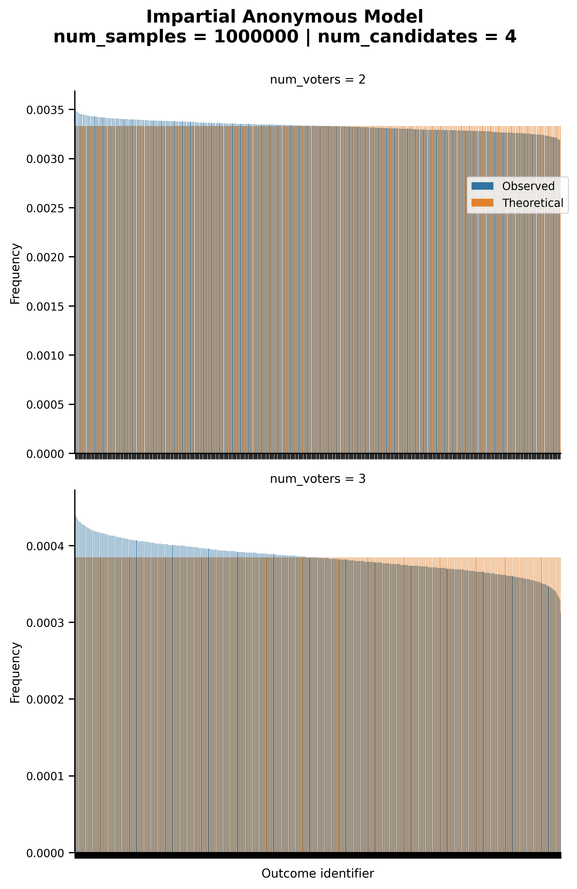
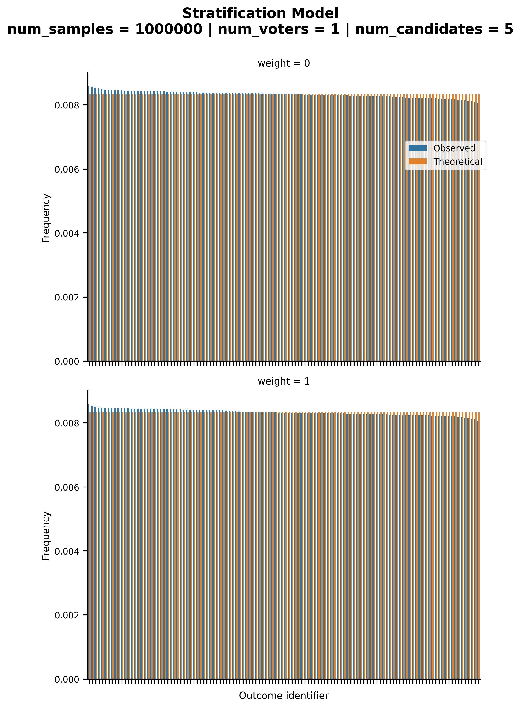
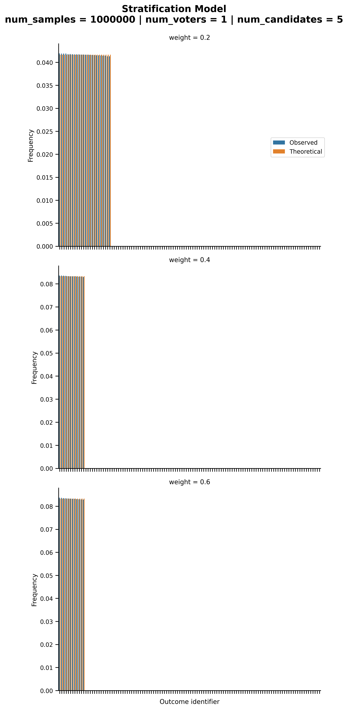
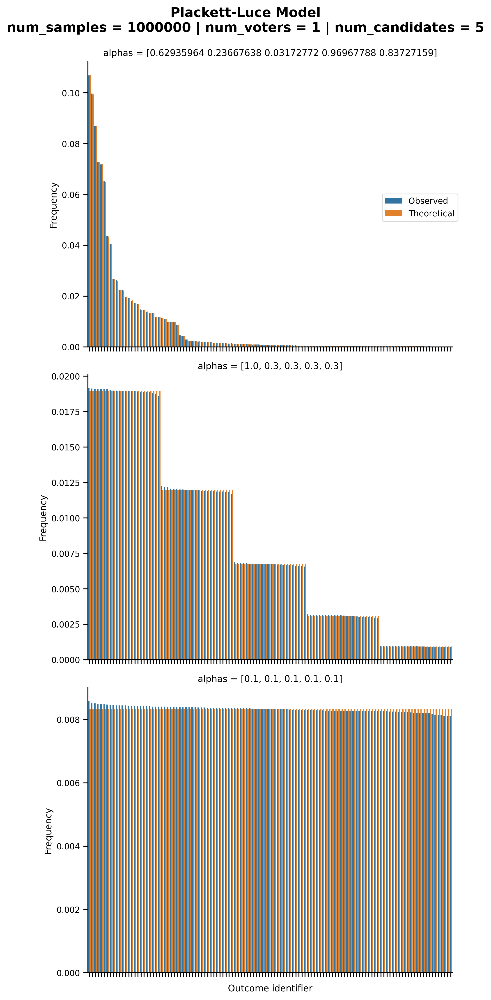
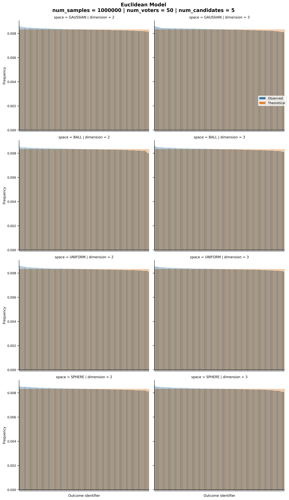
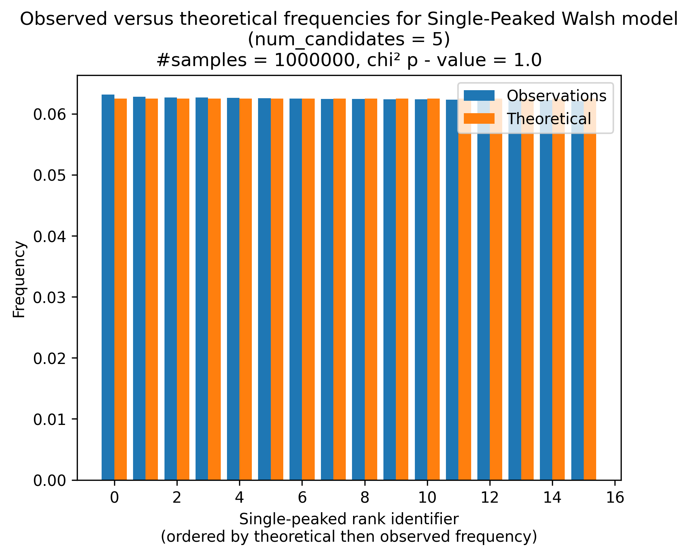
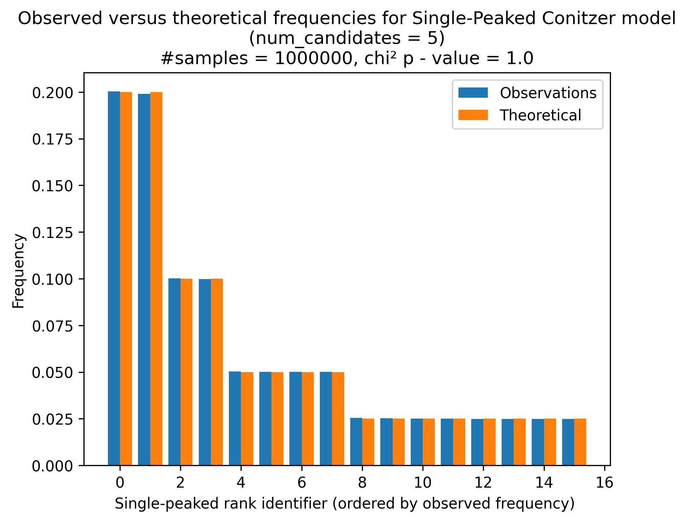
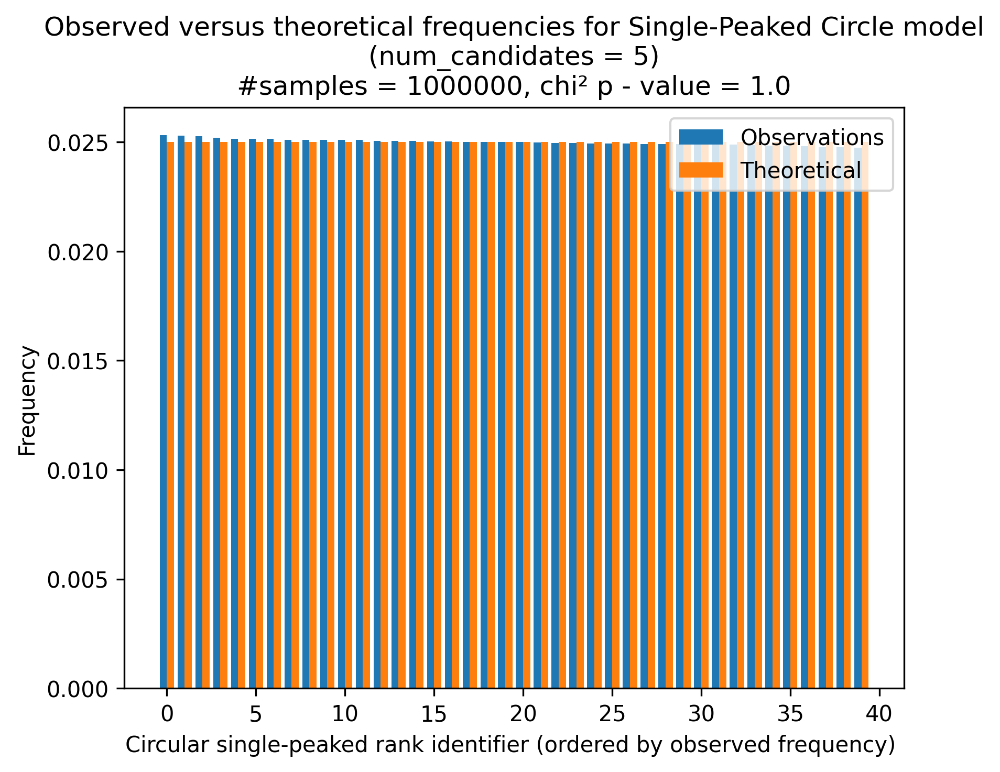
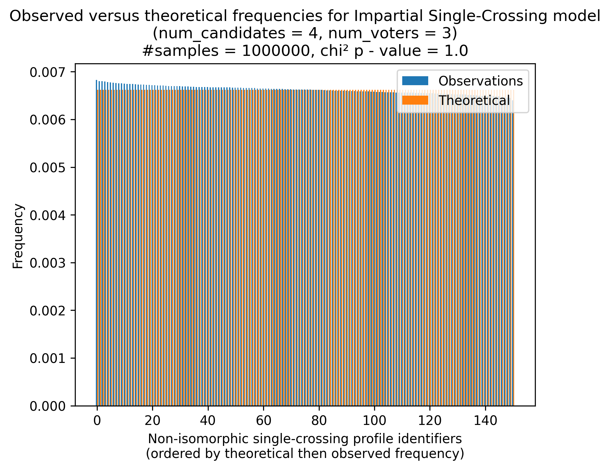
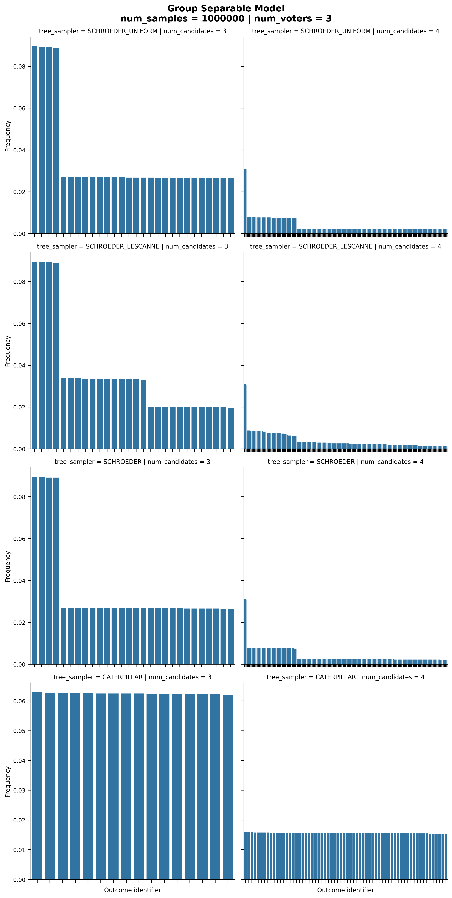

Ordinal Samplers#
We present below the validation tests we ran for ordinal samplers.
Impartial#
prefsampling.ordinal.impartial()
Under the impartial model, all ranks are equally likely to be generated.

Impartial Anonymous#
prefsampling.ordinal.impartial_anonymous()
With the impartial anonymous culture, every multisets of votes–an anonymous profile—are equally likely to be generated. Note here that we are discussing anonymous profiles and not ranks.
{kind=link}
Stratification#
prefsampling.ordinal.stratification()
Under the stratification model, only the ranks that are ‘’stratified’’ can occur.
When the weight is 0 or 1, there is a single class, and thus, we fall back to the impartial culture.
{kind=link}
We the weight is different from 0 and 1, we obtain more interesting distributions over the ranks.
{kind=link}
Urn#
The probability distribution governing an urn model is well documented. See https://www.jstor.org/stable/30024551 for instance.
Once again, we are here discussing anonymous profiles and not ranks.
When alpha is equal to 1 / m!, we fall back to the case of the impartial anonymous culture. For other values of alpha, different probability distributions are obtained.

Mallows#
prefsampling.ordinal.mallows()
The probability distribution generated by a Mallows’ model is also well known. See https://jmlr.org/papers/v15/lu14a.html for instance. When phi is one, we fall back to the impartial culture.

Plackett-Luce#
prefsampling.ordinal.plackett_luce()
The properties of the Plackett-Luce model have also been described at length. See https://proceedings.mlr.press/v48/zhaob16.html for example.
When all candidates have the same quality (i.e., all alpha values are equal), we fall back to the impartial culture case. Otherwise, different distribution can be observed.
{kind=link}
Didi#
For the didi model, there is no know probability distribution over the outcomes.

Euclidean#
prefsampling.ordinal.euclidean()
In the case of the Euclidean model, little is known about the distribution over ranks that they generate.

When there a single voter, we fall back to the impartial culture case.
{kind=link}
Single-Peaked#
prefsampling.ordinal.single_peaked_walsh()
For single-peaked samplers, the one proposed by Walsh (2015) ensures that all single-peaked rank are equally likely to be generated.
{kind=link}
prefsampling.ordinal.single_peaked_conitzer()
The model proposed by Conitzer (2009) yields a different probability distribution.In this distribution, the probability of observing a given single-peaked rank is equal to 1/m * (1/2)**dist_peak_to_end where m is the number of candidates and dist_peak_to_end is the minimum distance from to peak to an end of the axis (i.e., candidates 0 or m - 1).
{kind=link}
prefsampling.ordinal.single_peaked_circle()
For the single-peaked on a circle model, all single-peaked on a circle rank are equally likely to be generated.
{kind=link}
Single-Crossing#
prefsampling.ordinal.single_crossing()
For the single-crossing samplers, the impartial is designed to yield a uniform probability distribution over all non-isomorphic single-crossing profiles.
{kind=link}
The efficient sampler has unknown probability distribution.
Group-Separable#
prefsampling.ordinal.group_separable()
The sampler is supposed to produce a uniform distribution when used with a tree sampler that yields a uniform distribution. This does not appear to be the case however.
{kind=link}